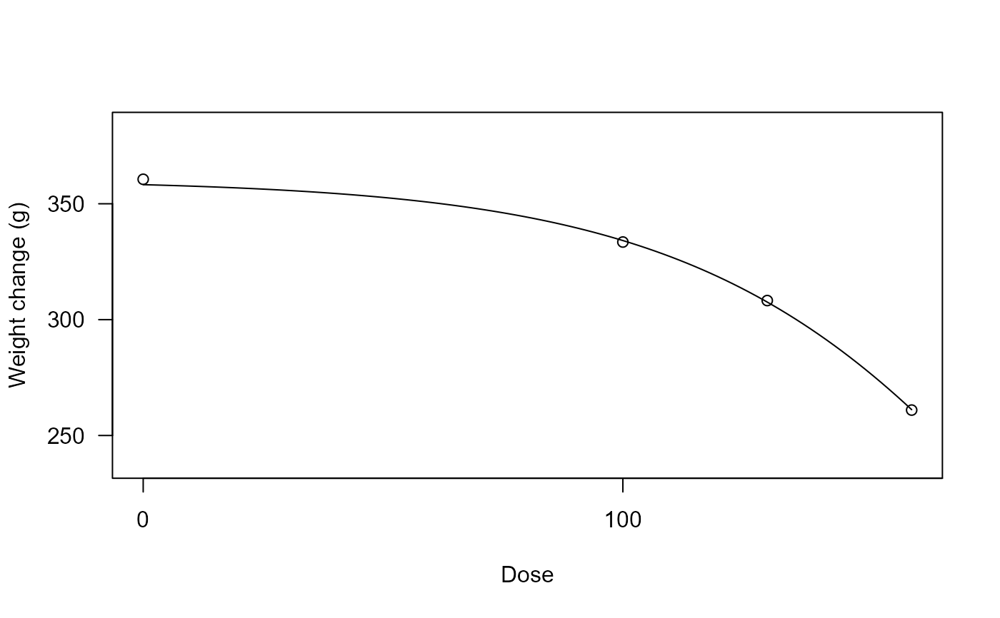

Weight change in rats after exposure to a medical drug
aconiazide.RdFor each of 4 dose levels the weight change over 6 monts is reported for 14 rats exposed to an antituberculosis drug, aconiazide.
Usage
data(aconiazide)Format
A data frame with 55 observations of the following 2 variables.
dosea numeric vector
weightChangea numeric vector giving weight change (g) after 6 months of exposure
Source
Beland, F. A. and Dooley, K. L. and Hansen, E. B. and Sheldon, W. G. (1995). Six-month toxicity comparison of the antituberculosis drugs aconiazide and isoniazid in fischer 344 rats. Journal of the American College of Toxicology, 14(4):328–342.
Examples
library(drc)
## Displaying the data
head(aconiazide)
#> weightChange dose
#> 1 366.0 0
#> 2 326.6 0
#> 3 355.0 0
#> 4 353.8 0
#> 5 354.4 0
#> 6 349.8 0
## Fitting a four-parameter log-logistic model
aconiazide.m1 <- drm(weightChange ~ dose, data = aconiazide, fct = LL.4())
summary(aconiazide.m1)
#>
#> Model fitted: Log-logistic (ED50 as parameter) (4 parms)
#>
#> Parameter estimates:
#>
#> Estimate Std. Error t-value p-value
#> b:(Intercept) 1.11216 0.45229 2.4589 0.01737 *
#> c:(Intercept) -46.62703 821.99546 -0.0567 0.95499
#> d:(Intercept) 360.39895 4.96987 72.5168 < 2e-16 ***
#> e:(Intercept) 1106.80577 3076.84642 0.3597 0.72054
#> ---
#> Signif. codes: 0 '***' 0.001 '**' 0.01 '*' 0.05 '.' 0.1 ' ' 1
#>
#> Residual standard error:
#>
#> 18.72333 (51 degrees of freedom)
## Plotting the fitted curve
plot(aconiazide.m1, xlab = "Dose", ylab = "Weight change (g)")
